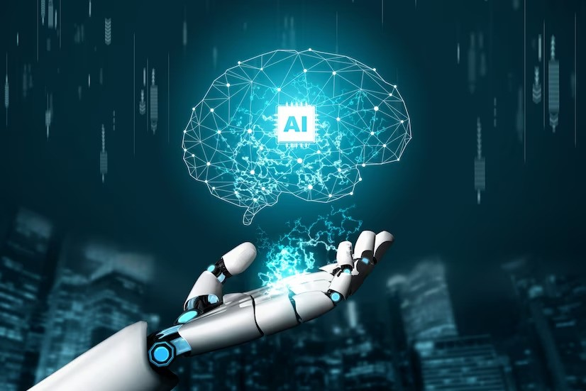

Investing in the Future
How AI Can Unlock Social and Economic Opportunities
Artificial Intelligence (AI) isn’t just about technology—it’s about making a real difference in people’s lives. Imagine using AI to tackle big problems like natural disasters, healthcare access, protecting the environment, and making sure everyone has a fair chance in education. When disasters strike, AI can help predict them early. By analysing lots of data quickly, AI can give warnings and help emergency teams respond faster. This saves lives and reduces damage.
In healthcare, AI can improve how doctors diagnose and treat illnesses. It can analyze health data to catch diseases sooner and give better advice. AI also helps people in remote areas talk to doctors online, getting medical help they might not have had before.
For the environment, AI keeps an eye on things like deforestation and climate changes. It uses data from satellites to track how our planet is changing. This helps us protect natural resources and plan smarter for the future.
In schools, AI can personalize learning. It adapts lessons to fit each student’s needs, making sure everyone gets the help they need to learn. This means better education for all kids, no matter where they live.
To help communities with AI, workshops and projects can get people involved. They can brainstorm ideas and create AI solutions that solve local problems. By working together, we can use AI to build a better world where everyone benefits.
In summary, AI isn’t just a fancy technology—it’s a tool for making life better for everyone. By using AI wisely and thinking about how it can help people, we can make big changes in our neighbourhoods and across the globe.
Tech Made Easy
Senior-Friendly Solutions for a Connected Life

In today's world, technology isn’t just for the young—it’s for everyone, including seniors. Learning how to use smartphones, tablets, and social media can bring big benefits to older adults.
Many seniors find technology tricky at first, but with the right help, they can learn to connect with family and friends through video calls and social apps. They can also manage their finances and healthcare online, which gives them more control over their lives.
Using technology isn’t just practical—it’s fun and stimulating too. Seniors can play games, do puzzles, and even take online classes, keeping their minds active and engaged. They can also explore the internet to learn new things and stay entertained.
Key Technologies for Seniors:
1. Basic Computer Skills: Operating systems, internet browsing, and email.
2. Microsoft Office: MS Word for documents, Excel for spreadsheets, and PowerPoint for presentations.
3. Smart Devices: Using iPhones, iPads, and Android devices.
4. Communication and Social Media Tools: Video calling (Zoom, Skype) Facebook, Instagram and WhatsApp
5. Online Services: Online banking, shopping, and health apps.
6. Entertainment and Learning: Streaming services (Netflix), online games, and e-learning platforms.
7. Digital Security: Password management and avoiding online scams.
8. HTML Basics: Creating simple web pages.
One of the best parts of technology is how it keeps seniors connected. They can join online groups, chat with others who share their interests, and stay in touch with old friends. This helps fight loneliness and makes them feel more connected to the world around them.
Overall, embracing technology opens up a whole new world of possibilities for seniors. It helps them stay connected, keeps their minds sharp, and makes everyday tasks easier. With a little guidance and practice, technology can truly enrich their lives in so many ways.
The Future is Now
A Look at Emerging Technologies and Their Impact
Emerging technologies like artificial intelligence (AI), blockchain, quantum computing, and biotechnology are changing the world. These innovations can solve big problems and improve our lives. This article looks at how these technologies impact different areas and what challenges they bring.
Emerging Technologies
Artificial Intelligence (AI): AI helps make better decisions and automate tasks. It's used in healthcare, finance, farming, and education.
Blockchain: This technology keeps transactions secure and transparent. It's used in finance, supply chains, and even voting.
Quantum Computing: These super-powerful computers can solve problems faster than regular computers, helping in areas like security and new materials.
Biotechnology: Advances in gene editing and synthetic biology are leading to new treatments in healthcare and sustainable farming.
Impacts on Different Sectors
Healthcare
Personalized Medicine: AI helps create treatment plans based on individual needs.
Telemedicine: Technology allows doctors to treat patients remotely.
Drug Discovery: AI and quantum computing speed up finding new medicines.
Finance
Fintech: AI and blockchain make financial services more secure and efficient.
Cryptocurrencies: Digital money offers new ways to handle transactions.
RegTech: Helps companies follow laws and regulations more easily.
Agriculture
Precision Farming: AI and smart devices improve crop production.
Biotech Crops: New genetic techniques create stronger, more sustainable crops.
Transparent Supply Chains: Blockchain ensures food is tracked from farm to table.
Education:
Adaptive Learning: AI customizes lessons for each student.
Virtual Reality (VR): VR provides immersive learning experiences.
Global Access: Technology brings education to remote areas.
As technology spreads, protecting data is crucial for privacy and security. It's important to use technology fairly and responsibly, ensuring ethical guidelines are followed. Governments also play a key role by creating rules that encourage innovation while safeguarding people's rights and interests is considered as challenges and ethical considerations.
Emerging technologies have the power to change our world for the better. By using them responsibly and ensuring everyone benefits, we can solve major problems and improve lives. The future is bright if we embrace these innovations wisely.